General
Stargates presently come in 3 different varieties:
- Universe
- Milkyway
- Pegasus
Each have their advantages and disadvantages however fundamentally they all function in the same way each gate uses a set of 7 to 9 glyphs to know where the gate it is dialing to is located. In the case of universe gates and 9 glyph addresses these sequences of glyphs are a code however in terms of the Milkyway and Pegasus 7 and 8 glyph addresses they represent a set of spatial coordinates. In 8 glyphs addresses the 7th glyph acts kinda like an area code telling the gate that the gate it is trying to dial is not in it's galaxy for example when you are dialing from the Milkyway galaxy to the pegasus galaxy. In 9 Glyph addresses in the cases of the Pegasus and Milkyway gates the 8th glyph in the sequence tells the gate that instead of dialing a set of spatial coordinates it is instead dialing a code and the PoO (Point of Origin) can act as a identification code for secure gates such as the gate on board Destiny (this method of connection identification is not implemented in the mod).
In the show we see on many occasions that when a gate is dialed it forms the unstable vortex commonly know as the kawoosh. In the shows we see this phenomena vaporize all sorts of things from people to entire ships, this has been implemented into the
mod with it's destructive power however it cannot destroy everything some vanilla examples of blocks it cannot destroy are obsidian and bedrock it will not destroy anything that is unbreakable through conventional means such as small amounts
of TNT. In the mod the kawoosh is 3 blocks wide, 3 blocks tall and protrudes 7 blocks out of the event horizon when fully formed for the Orlin gate however it is only 1 block in all directions.
 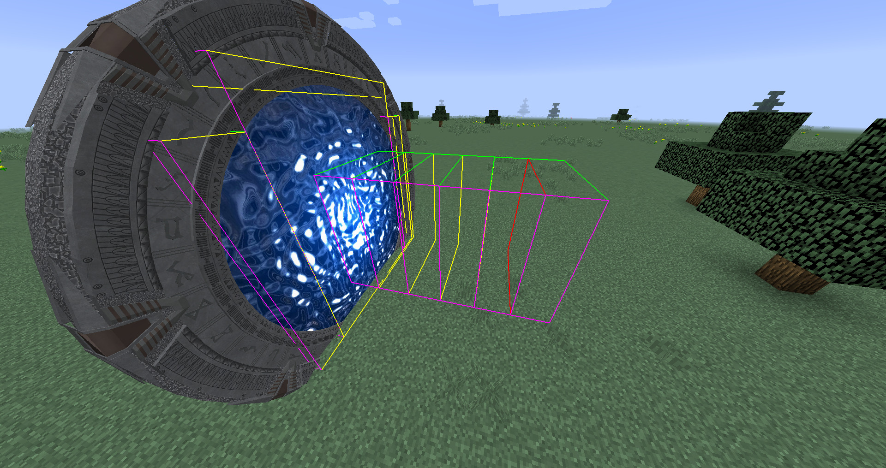
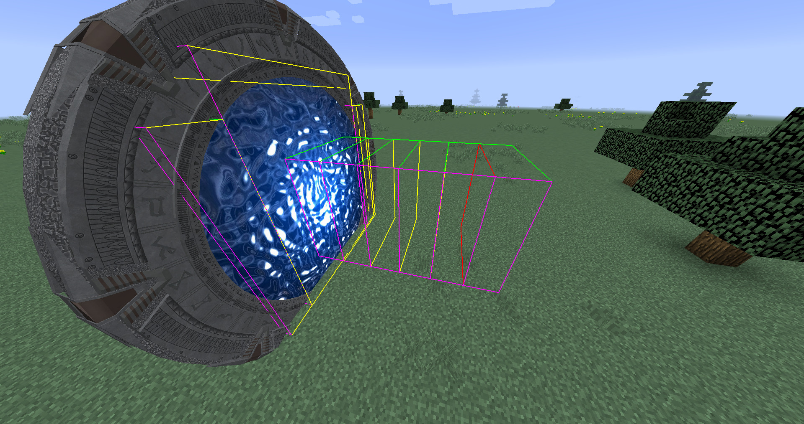
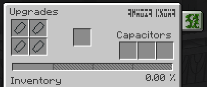 The gui of the gate is quite simple it consists of a total of 8 slots in it's most basic form. The 4 slots on teh right hand side are for teh various Glyph crystals, the center slot is for an iris and the 3 slots on teh right hand side are for capacitors. Capacitors increase teh amount of power a gate can hold at once.
In the show the gate props were about 6.7m(22 feet) in diameter however in the mod the gates are approximately 7.15 blocks in diameter which with the knowledge that a block is a meter wide the gates in the mod are approximately 7.15m in dimeter which is a bit bigger than the gates from the show making the mod slightly inaccurate to the show however this inaccuracy is caused by the limits to Minecraft the rest of the inaccuracies the mod has are either being worked on or also due to the limits of Minecraft.
Orlin
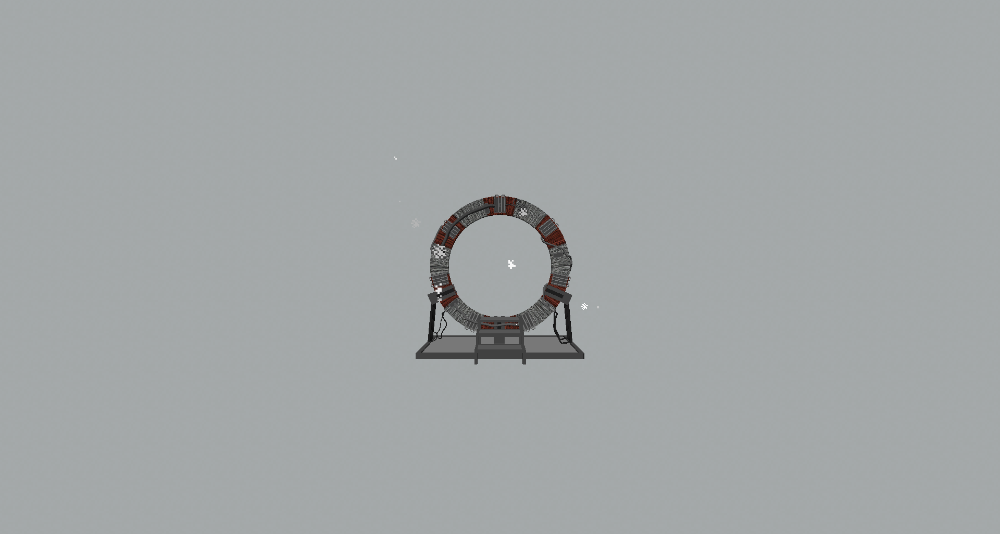
In the show at one point we see a descended Ancient by the name of Orlin builder a miniature stargate in Carter's basement using materials he was able to obtain on earth including but not limited to: 100 pounds of pure titanium, 200 feet of fiber optic cable, seven 100,000 watt industrial-strength capacitors, and Carter's toaster. This stargate was single use in the show so in the mod we assigned to the use of being the way for you to first get to the nether once you build and sufficently power the Orlin gate you can activate it with a redstone signal causing it to engage a wormhole to the nether gate that is generated the first time an Orlin gate is used. In the config for the mod you can configure the amount of uses an Orlin gate has but remember a use is used for both getting to the nether and getting back, speaking of getting back from the nether when you have no stargate in the overworld tp get back you must dial Earth's address from the nether gate assuming there are no gates that have had their address set to earth's address then the stargate will dial to the last used Orlin gate.
Universe
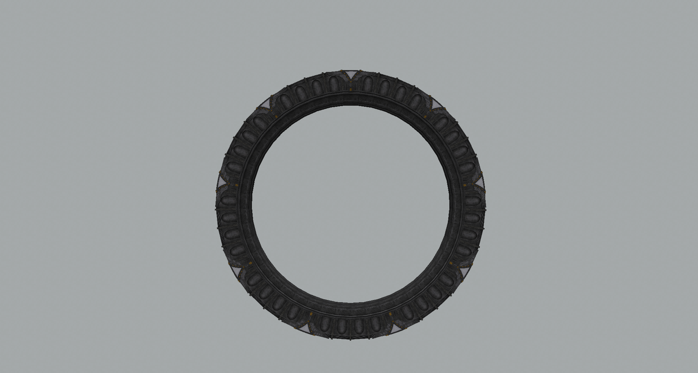
In the show we know that the universe gates are the 1st generation of gates thus are the worst of the three in the show we see that they are less durable than the 2nd and 3rd generations of gates we also see that they are quite short ranged compared to the other 2 generations both of these limit the gate greatly.
Universe stargates are the most disadvantaged of the lot. They use more power, don't have a DHD, they can be blown up with TNT, they rotate slowly when used with OC (open computers) and (by default can be changed in the config) cant hold any capacitors thus are severely limited in the amount of power they can hold the one possible advantage they may have is that instead of being controlled by a DHD they are controlled by the universe dialer which you only need one of in order to navigate your whole universe gate network. In terms of in game progression this is designed to be the first gate you build after going to the nether it is cheaper to craft requiring much less naquadah.
Milkyway
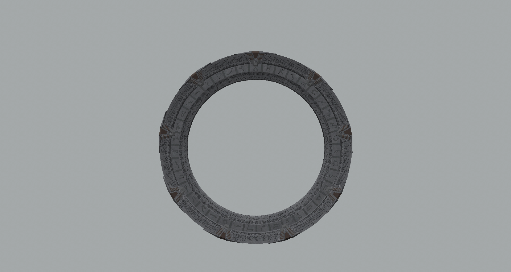
The Milkyway gates were the 2nd generation of stargates built by the Ancients they use less power than teh 1st generation gates and can dial further they also use a DHD to dial but if a DHD is not present they are still able to dial through manual rotation of the glyph track (Not yet implemented into the mod) which is a rotatable ring that displays all the Milkyway glyphs on a Milkyway stargate including the forbidden glyph (Aquila) this glyph is forbidden as it is not on any DHD but it is on the Glyph ring. In the mod Aquila can not generate in an address nor can a address be forced use it. Milkyway stargates are faster when used with OC(open computers) than universe stargates as the glyph track spins faster than the Universe stargate does meaning that teh Milkyway stargate is far more efficient than the Universe stargate.
Pegasus
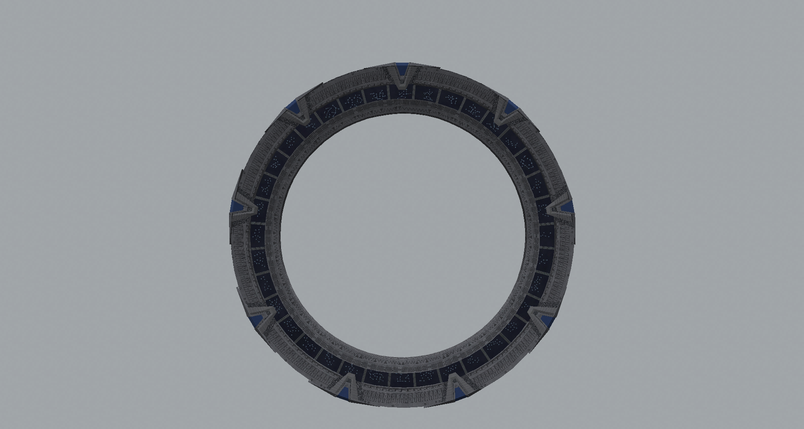
The Pegasus gates are the 3rd generation of stargate with the Ancients perfecting their design through the removal of all moving parts instead of teh gate rotating or having a rotating glyph track teh pegasus stargates instead use some kind of light emitting panel to display the dialed glyphs they also simplified the glyphs they used to teh actual star formations instead of the images that represent them like the Milkyway glyphs. The Pegasus stargates were also more power efficient than the Milkyway stargates. In the mod the Pegasus stargate is the best option fo efficiency as it uses less power and when used with OC(open computers) it takes a maximum of 1 second(assuming there is little to no lag) to engage a glyph where it would take up to 10 seconds with the Milkyway gate with OC(open computers).
Glyph Crystals
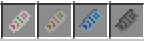
THESE CRYSTALS DO NOT AFFECT TEH FUNCTION OF THE GATE
These crystals are only for getting the address of a gate whether to be written down external in some way shape or form or in game using a note book page, to use a notebook page to record an address you must insert teh page into the slot
in the gui like this:
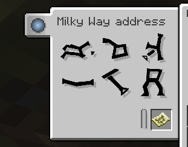
Notebooks and pages
To craft a notebook page you must do so like this:
 And to duplicate a written notebook page you can do so like this:
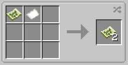 Notebook pages like maps when placed in item frames display what you see when holding them, Glyphs are arranged on notebook pages in order you
dial them from left to right, top to bottom, if you want to combine your addresses into a single item to take up less space you can by making a notebook in one of the following ways
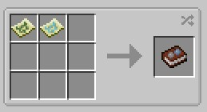
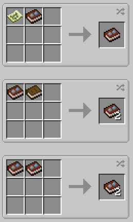
And to duplicate a written notebook page you can do so like this:
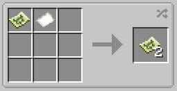 Notebook pages like maps when placed in item frames display what you see when holding them, Glyphs are arranged on notebook pages in order you
dial them from left to right, top to bottom, if you want to combine your addresses into a single item to take up less space you can by making a notebook in one of the following ways
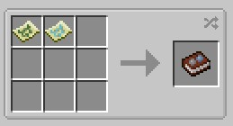
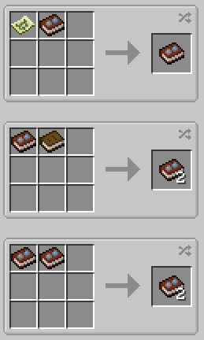